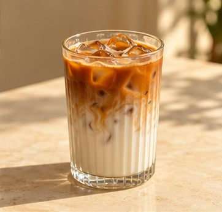
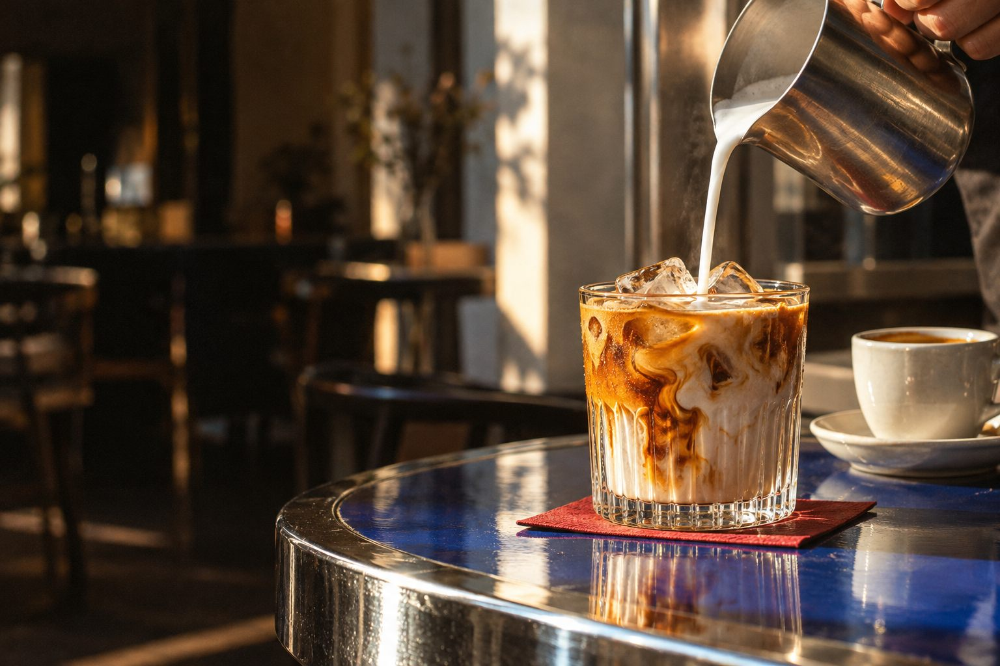
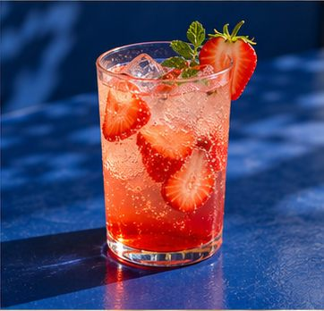
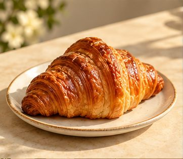
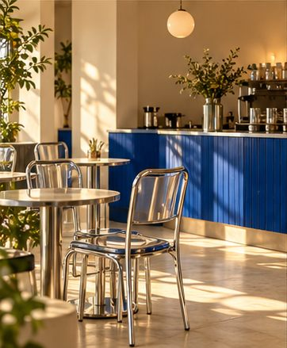
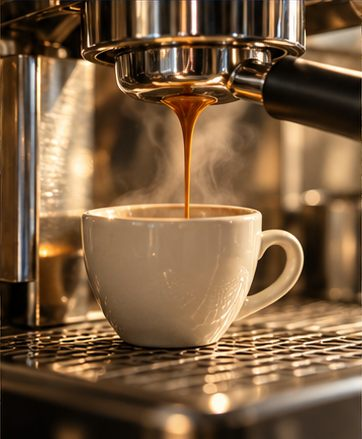
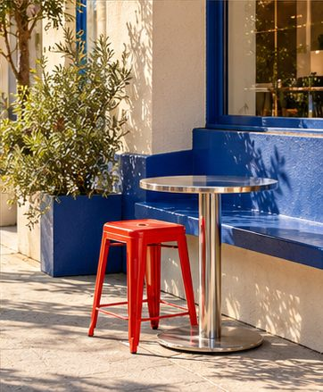

THE SLOW MORNINGBlue Hour Latte
Rp32.000Lembut, creamy, dan nggak perlu banyak alasan.

BUAT HARI YANG TERASA MILIKMU.
Pelan dulu. Nikmati yang ada di cangkirmu.
Hari ini nggak perlu buru-buru.
01 / PILIHAN SUNDAYS
Tiga pilihan untuk menemani
versi terbaik dari harimu.

THE SLOW MORNINGLembut, creamy, dan nggak perlu banyak alasan.

A LITTLE PICK-ME-UPSegar, cerah, seceria rencana spontanmu.

YOUR COFFEE'S PLUS ONERenyah di luar, lembut di dalam. Pas buat jeda.
03 / A LITTLE ABOUT US
SunDays berangkat dari satu ide sederhana: setiap hari layak punya jeda yang menyenangkan. Secangkir kopi, obrolan tanpa agenda, atau waktu sendiri yang nggak perlu dijelaskan.
Dalam konsep ini, kami membayangkan sudut kota yang terasa sedikit lebih hangat. Tempat untuk datang apa adanya, memilih rasa yang kamu suka, dan menikmati ritmemu sendiri. Karena hari yang baik nggak selalu soal melakukan lebih banyak. Kadang, cukup menikmati yang ada di depan mata.
Take a sip. Take your time.
04 / SUNLIT LITTLE MOMENTS
Cahaya hangat, aroma kopi,
dan ruang untuk jadi diri sendiri.
Visual ilustratif untuk konsep cafe.

